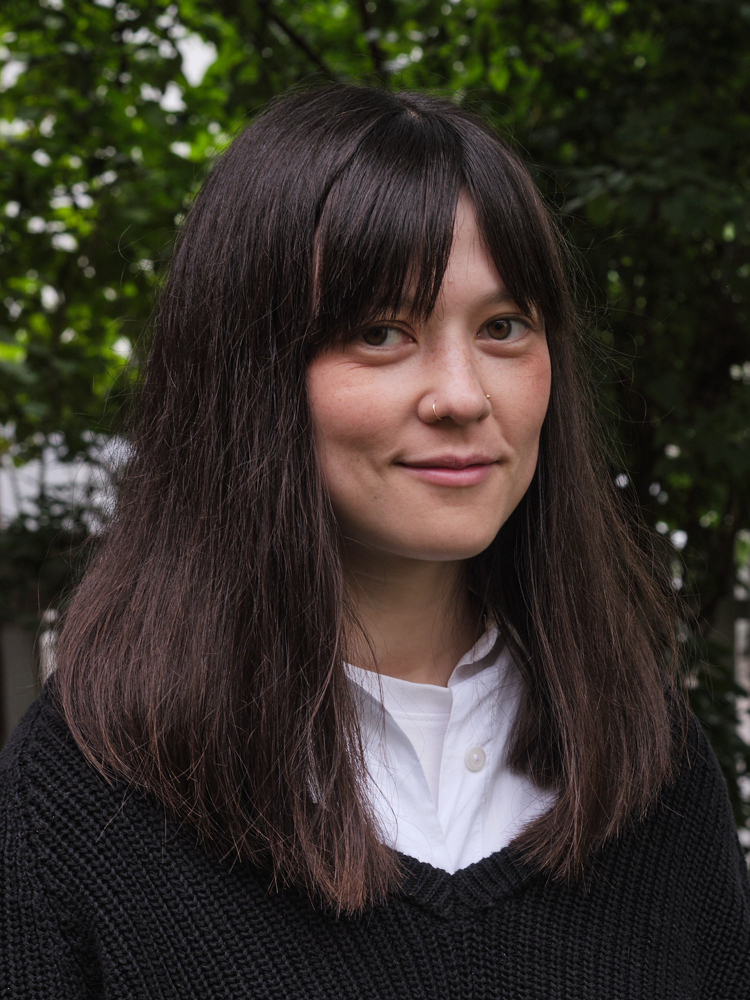

I am a logician, hobby organist,
esperantist and devoted backgammon player.
I also occasionally write and translate texts about film or popular science.
My academic interests lie in the intersection of mathematics and philosophy, ranging from
the philosophy of mathematics to logic and formal epistemology.
I am currently working as a postdoctoral researcher in the Research Priority Area in Human(e) AI at
the University of Amsterdam, where I am affiliated with the Institute for Logic, Language and Computation (ILLC). In October 2026 I will join the Department of Informatics at the University of Oslo as a postdoctoral researcher.
Before I started my job in Amsterdam, I completed a PhD in Information Science in the Logic & AI research group at the University of Bergen, under the supervision of Marija Slavkovik, Thomas Ågotnes and Sonja Smets. The thesis was about using modal logic to research agents in multi-agent systems who act unexpectedly, or try to take advantage of the system for their own gain.
It won the Norwegian Artificial Intelligence Society (NAIS) Dissertation Award. You can read my thesis here.

(Photo credit: Sebastian Guha Skjulhaug)
News
25/7/26: I presented at the workshop Women in Logic as part of the Federated Logic Conference (FLoC 2026) hosted at ISCTE – University Institute of Lisbon, Portugal.
6/7/26: Our paper Social Networks Through Time: Completeness of Temporal Network Logic got accepted at the 33rd International Symposium on Temporal Representation and Reasoning (TIME 2026) to be held at University College Cork between September 1-3. It was written together with Saúl Fernández González and Sonja Smets.
2/7/26: I presented a short paper at the conference Advances in Modal Logic (AiML) at the University of Amsterdam, The Netherlands.
22/6/26: Our paper Social Logic: Logic for Modeling Social Phenomena was published in Synthese. It was written together with Gaia Belardinelli, Thomas Bolander, Paolo Galeazzi, Jens Ulrik Hansen, Andreas Herzig, Dominik Klein, Emiliano Lorini, Frederik Van De Putte and Fernando R Velázquez-Quesada. Gaia and Thomas are the first authors.
18/5/26: I have accepted an offer for a postdoctoral research position at the Department of Informatics at the University of Oslo starting on October 1, 2026. I will be joining the Data and Knowledge Management (DKM) research group.
19/4/26: Our paper Balance and Diffusion as Network Games got accepted at the 16th Conference on Logic and the Foundations of Game and Decision Theory (LOFT) to be held at King's College London between June 24-26. It was written together with Edoardo Baccini, Zoé Christoff and Bonne Jongsma.
23/10/25: I presented at the 6th Taiwan Philosophical Logic Colloquium (TPLC) at the National Taiwan University in Taipei, Taiwan.
18/6/25: I won the Norwegian Artificial Intelligence Society (NAIS) Dissertation Award 2024 for my PhD thesis! I went to The Arctic University of Norway in Tromsø to accept the prize and to present my thesis at the NAIS Symposium. You can read more about the dissertation award
here.
7/3/25: I have accepted an offer for a postdoctoral research position at the University of Amsterdam starting on 1. April.
I will be working under the Research Priority Area in Human(e) AI and I will be affiliated with the
Institute for Logic, Language and Computation (ILLC).
24/1/25: I was interviewed by Khrono, Norwegian newspaper for higher education and research, about my PhD and my hobbies.
You can read the article here.
2/12/24: I was invited to speak at the workshop Methodology of Logic at the University of Padova, Italy.
27/11/24: I presented at the annual conference for the Australasian Association for Logic in Sydney, Australia (online).
15/11/24: I was inducted into the Logicians Liberations League as Magister of Malicious Networks
by Shawn Standefer, Andrew Tedder and Thomas Ferguson.
14/11/24: I was invited to speak at the workshop Variable Sharing Properties and Their Discontents at
Rensselaer Polytechnic Institute (RPI) in Troy, NY.
27/9/24: I successfully defended my PhD thesis at the University of Bergen.
My committee consisted of Zoé Christoff (University of Groningen), Patrick Blackburn (Roskilde University)
and Fernando Velázquez Quesada (University of Bergen). It was a very special day.